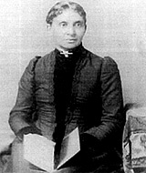

|

|

|
|
|
African American author, educator, and civil rights
advocate Charlotte Forten was born on August 17, 1837 into a
prominent and wealthy abolitionist family in Philadelphia.
The family wealth allowed Forten to be tutored at home until
she was sixteen years old, at which time she was sent to
Higginson Grammar School in Salem, Massachusetts. Upon
graduation from Higginson, Forten enrolled at Salem Normal
School to become a teacher. In 1856, Forten accepted a
teaching position at Epes Grammar School in Salem.
Ill-health caused her to return to Philadelphia in 1858.
Besides teaching, Forten was a gifted poet, with antislavery
the most common subject of her poetry.
By the spring of 1862, Union forces had pushed
Confederate planters out of the South Carolina Sea Islands.
Left behind upon the Rebel retreat were thousands of slaves.
On October 21, 1862, Forten received her assignment as the
first black teacher hired for the Sea Islands Mission. From
noon until three nearly one hundred students attended the
school. Classes resumed in the evening. In 1864 Forten's
continued poor health caused her to leave the Mission, but
she published essays about her experiences in the South Sea
Islands in Atlantic Monthly.
During Reconstruction, Forten worked as secretary of the
of the Freedmen's Relief Association, and she continued to
write. She also taught high school and was one of fifteen
people selected for the position of a clerk at the U.S.
Treasury Department out of a field of nearly 500 candidates.
At forty-one, she married Frances J. Grimké, a
Presbyterian minister from a prominent abolitionist family.
When Charlotte Forten Grimké died in 1914 she had served
as a groundbreaker and a role model for her generation. Her
diaries, probably her greatest legacy to history, were
published in 1953, and tell the story of a well-educated,
self-possessed, and motivated woman who did much to forward
the cause of African American rights.
Source: Joan Waugh, ed., Facts on File Encyclopedia of American
History: Civil War and Reconstruction, 1856 to 1869 (New York: Facts on
File, 2003), 160.
|